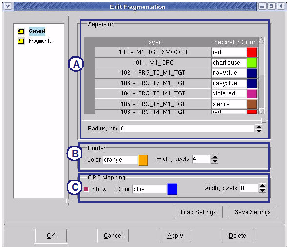

Once you have
generated the fragments, you can set their general display properties.
Procedure
- Click a
fragment and choose the menu
option. The Edit Fragmentation dialog box appears.
- Click the General icon in the left side
of the Edit Fragmentation dialog box.
- In the Edit Fragmentation
dialog box (General view), set the display properties for all fragments.
The functional areas of the Edit Fragmentation dialog box (General
view) are described in Table 1.
Figure 1. Edit Fragmentation
Dialog Box (General)
Table 1. Edit Fragmentation Dialog Box (General) Contents| |
Item
|
Description
|
|---|
A
|
Separator
|
Assign the color and
radius of separators (the dots that indicate the endpoints of a
fragment).
|
B
|
Border
|
Select the color and
width in pixels of the border lines.
|
C
|
OPC Mapping
|
Select the color and
width in pixels of OPC Mapping separators. You can also turn off
the mapping arrows.
|